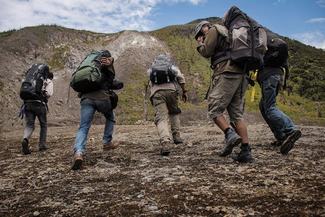

Now a days Hicking is one of the favoured physical activities among the young people. As Wikipedia says Hiking is a long, vigorous walk, usually on trails or footpaths in the countryside. Walking for pleasure developed in Europe during the eighteenth century. One may confuse hicking with trekking. However, both are not same. Trekking means to make a long or difficult journey, especially on foot. On the other hand, Hiking is the activity of going for long walks in the country for pleasure.
Hiking, often described as a journey on foot, is more than just a physical activity; it’s an experience that connects us with nature, challenges our physical limits, and rejuvenates our minds. Whether you’re trekking through dense forests, climbing rugged mountains, or strolling along serene riverbanks, hiking offers a unique blend of adventure, exercise, and tranquility. The benifits of hicking are physical, mental, and it also hepl to have a social interection.
1. The Physical Benifits: One of the most significant advantages of hiking is the physical exercise it provides. Walking, especially on uneven terrain, engages various muscle groups, including the legs, core, and even the upper body when using trekking poles. This full-body workout helps improve cardiovascular health, build muscle strength, and enhance flexibility. Regular hiking can lead to better endurance, weight loss, and overall physical fitness.
2. Mental and Emotional Well-being: Hiking is not just beneficial for the body; it’s also a powerful tool for mental health. The act of walking in nature has been shown to reduce stress, anxiety, and depression. The serene environment, away from the hustle and bustle of city life, allows the mind to relax and unwind. The rhythmic motion of walking can be meditative, helping to clear the mind and improve focus. Additionally, the sense of accomplishment after completing a challenging hike can boost self-esteem and provide a sense of achievement.
3. Connection with Nature: One of the most profound aspects of hiking is the opportunity to connect with nature. As you traverse through different landscapes, you get to witness the beauty and diversity of the natural world. From the vibrant colors of wildflowers to the soothing sounds of a babbling brook, every hike offers a unique sensory experience. This connection with nature can foster a greater appreciation for the environment and inspire efforts to preserve it.
Choosing a hiking destination can be an exciting part of planning your adventure! Here are some steps to help you find the perfect spot:
Assess Your Fitness Level:Consider your physical condition and experience. Choose trails that match your fitness level to ensure a safe and enjoyable hike.
Define Your Preferences:Think about the type of scenery you enjoy. Do you prefer mountains, forests, waterfalls, or coastal views? This will help narrow down your options.
Decide on the Trip Style: Determine if you want a day hike or a multi-day backpacking trip. For beginners, day hikes are a great start. More experienced hikers might enjoy the challenge of overnight camping.
Bangladesh offers some beautiful hiking destinations that cater to various preferences and skill levels. Hicking destinations are feavoured mainly in the rigion of Chittagong Hill tracks. Click on the district's (KHAGRACHARI,RANGAMATI,BANDARBAN) map to know the details.